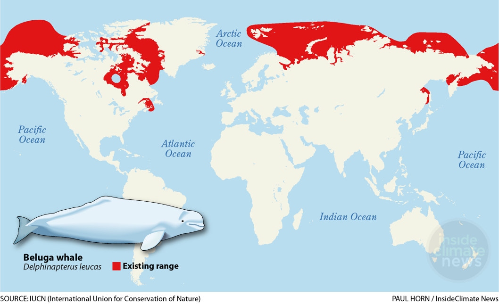

HABITAT
Where Do Whales Live?
Much Like dolphins, whales can be found in all of the major oceans in the world. They can live from the Arctic to the Antartic oceans, and in the tropical waters in and around the equator. Migration patterns vary depending on the species of the whales, where some typically will leave one environment and temporarily relocate to another to mate & feed, while some others donot migrate at all.
Map showing where whales reside around the world
Grey Whales
Grey Whales are often found swimming eastern to western north pacific ocean during feeding season. To mate, they will also migrate towards the Baja Peninsula of Mexico and the Southern Gulf of California
Killer Whales
Killer Whales can be found living in all of the major oceans, but are usually concentrated in areas where there is a large food supply and are likely to migrate to areas where they food supply is traveling.
Humpback Whales
Humpback Whales can be found in all of the major oceans but they prefer cold waters like in the Antartic or Artic oceans
Work Cited
1. https://www.whale-world.com/whale-habitat/
2. http://www.whalefacts.org/whale-habitat/